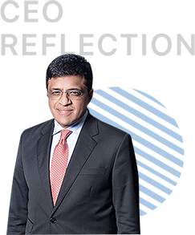

B. ANAND
Chief Executive Officer

Dear Shareholders,
The third decade of 21st century has gotten off to a turbulent start with the outbreak of COVID-19, which will leave an indelible impact on all of us. The unprecedented pandemic is acting as a harbinger of a ‘new’ world and may profoundly alter our existing economic and social order. I remain optimistic towards the future and confident in our society as well as Nayara Energy’s resilience in a post-pandemic world.
Standing still isn’t an option for us and therefore, at Nayara Energy, we are committed to transform our thinking to emerge stronger towards new vistas of possibilities and opportunities. In our quest to inspire a better and stronger tomorrow, we continue to remain focused on strengthening various facets of our business, serving our community and transitioning into the future.
Health and Safety First
These are extraordinary times and our top priority continues to ensure the safety of our employees and support our communities to navigate through the turbulence caused by COVID-19. Despite the lockdown, we continued supply of fuel uninterrupted through the country by running our operations at optimum levels across the refinery, port and retail business. We sufficiently procured essential protective gear for all our employees and contract workers, and organized various COVID-19 awareness sessions, set up a 24*7 helpline to provide assistance to our people, with special focus on their emotional well-being.
Responsible Community Stewardship
The spirit of contributing with the society has been an integral part of Nayara Energy’s corporate culture. Therefore, the extraordinary turbulence caused by the spread of COVID-19 pandemic forced us to nimbly refresh our corporate responsibility strategy to address the urgent social challenges.
We are committed to building a company that is profoundly human and are determined to make a difference for our people, communities and the environment. We are accountably delivering social impact in the areas of sustainable livelihoods & environmental sustainability, education & skill development, and health & sanitation.
Operational Performance & Focus on Cash Generation
Geo-political risks, contentious trade negotiations, slowing global economy continue to result in inscrutable fluctuations in oil prices. The pandemic added another significant layer of uncertainty to the oil market.
While refining margins have hit historical lows driven by slump in global and domestic demand, our refinery continues to run at relatively higher throughput rate compared to our regional peers due to the optionality of domestic and export supply built into our business model.
Our refinery processed 20.62 MMT of crude during the year running at slightly higher than nameplate capacity with all refinery units displaying high degree of reliability and utilization. Despite significant challenges in heavy crude oil availability in the global market, our trading teams ensured we process 84% of advantaged heavy and ultra-heavy crudes and still produce 86% of higher margin light and middle distillates.
During the year, we also launched high quality BS VI grade fuels for the domestic market and VLSFO (very low sulphur fuel oil) grade fuel for global bunker market.
Our retail business continues to expand the footprint in select focused markets with addition of 574 new outlets in last fiscal. Overall, our outlets stood at 5,702 fuel stations at the end of FY 2020. Our retail business generated 18% YoY volume growth and historically high retail margins in FY20 driven by our efforts in improving quality of our outlets and focus on strengthening our supply infrastructure.
During the year, we hired coastal terminals in Karnataka & Tamil Nadu and commenced supplies from our state-of-the- art rail-fed depot in Wardha for improving local product availability.
Strengthening Balance Sheet Amidst Weak Markets
We continue to remain focused on strengthening our balance sheet to tide through the difficult times and prepare for future growth. During the year, we maintained our domestic credit rating of “AA” and achieved interest cost savings of INR 191 Cr (9%) despite strong headwinds from the markets.
On governance, we have implemented several transformational programs resulting in optimization of costs, enhanced control and inventory management. During the year, we have also implemented new investment governance framework to effectively manage our ongoing and future capital projects.
Digitization at the Core of our Growth
During the year, we successfully commissioned several projects basis our three key drivers of digital agenda. These include transformation of business processes to reduce complexities, create business capabilities and optimize available resource; strengthening digital resilience (disaster recovery, cybersecurity and corporate data protection) and most importantly, IT modernization across refinery, retail and other business functions.
Specifically in retail, we have automated approximately 50% of our retail outlets and plan to automate the entire network by FY 2020. Our aggressive supply chain automation strategy - right from refinery to depot to the franchisee network will aid in inventory optimization as well as increase in sales.
In the future, we reimagine an “intelligent” refinery that leverages digital investments to sense demand with better forecasting. By leveraging digital tools, we will be able to optimize against operational situations and enable the refinery to optimally react to changing market dynamics.
Strengthening Our Talent and Culture
We are committed to fostering and empowering a culture in which our people feel they can bring their best selves to work. Our first employee engagement survey by Gallup validated employees’ strong belief in our EXCEL values.
This year, we have launched behavioural competency framework, SPIRIT, which articulates the expected behavioural standards required by our people and provides clarity on our values.
Our people remain committed to the highest ethical standards and compliance with all applicable laws, rules and regulations.
Foray into Petrochemicals
We continue to work on our vision of transforming Nayara Energy into one of the largest integrated oil and petrochemical companies globally that will meet the needs of domestic market and will secure attractive returns for our shareholders. In our view, strategy to grow with an emphasis on petrochemicals looks even more attractive for the demand patterns of the post-COVID-19 world.
As we plan to move forward in a phased manner, significant progress has been made during the year on the initial project to produce polypropylene from underutilized refinery streams.
We believe our expansion will significantly contribute to National and State economy by increasing employment potential and providing opportunities for establishment of numerous small and big allied industries.
As we navigate this global pandemic, we are adapting to the changes - the way we work, learn, connect, and simply how we live in the community with each other.
Complacency is unacceptable and therefore, we are pushing ourselves to innovate and disrupt to grow and ensure Nayara Energy remains optimistic and undeterred by the challenges as we capitalize on the solid foundation and strategic asset base we have.
I extend my sincerest appreciation to our people and stakeholders for the continued support and patronage.
Regards,
B. Anand
Chief Executive Officer